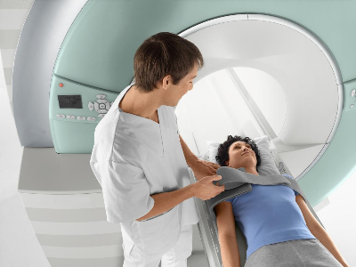

"Serviços"
Voltar para Página Incial

Ressonância Magnética
Serve para examinar com detalhes ossos, tórax, pulmões, coração e vasos sanguíneos

Ecografia
Recomendado para avaliações vasculares, musculares e abdominais

Raio X
Recomendado para avaliações vasculares, musculares e abdominais
Mamografia
Mamografia é um exame de Raio X que permite visualizar a região interna das mamas femininas, para que se possa identificar se há ou não nódulos ou lesões nas mamas
Tomografia
É um tipo de Raio X mais detalhado, com melhor resolução de imagens. Permite uma reconstrução tri-dimensional do corpo. É especialmente boa para diagnosticar doenças do cérebro, abdómen, tórax, tumores, derrames, alterações pulmonares, fracturas, malformações entre outras.